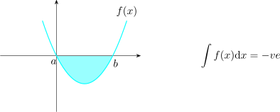
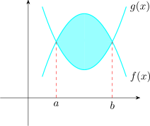
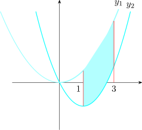

23.5 Area Under the Curve
Integration is applied in:
- 1.
- Determining the area under the curves i.e
\(\displaystyle {\int f(x) dx = F(b) - F(a)}\hspace {0.3cm}\) by the fundamental theorem of calculus.
The area is determined by the area between the curve and the \(x-\)axis bounded by \(x = a\) and \(x = b\).
The area below the \(x-\)axis is negative.

We can find the area between two curves such as

\[A = \int ^b_a \Big [f(x) - g(x)\Big ]\hspace {0.1cm}dx\]
- (a)
- Find the area enclosed by the curve \(\hspace {0.2cm} y_1 = x^2\hspace {0.2cm}\) and \(\hspace {0.2cm} y_2 = x^2 -2x\hspace {0.2cm}\) and the limits \(\hspace {0.1cm} x = 1\hspace {0.1cm}\) and \(\hspace {0.1cm} x = 3\)

\begin {align*} A & = \int ^3_1 \Big [f(x) - g(x)\Big ]\hspace {0.1cm}dx = \int ^3_1\big [x^2 - \big (x^2 -2x\big )\big ]\hspace {0.1cm}dx\\\\ & = \int ^3_12x\hspace {0.1cm}dx\\\\ & = x^2\Bigg |^3_1\\\\ & = 9 - 1\\ & = 8\hspace {0.2cm}\text {units squared}\\\\ \end {align*}
- (b)
- \(x = \sqrt {y}\hspace {0.2cm}\implies \hspace {0.2cm} f(y) = \sqrt {y}\)

\begin {align*} \therefore \hspace {0.5cm} \int ^3_0 f(y) \hspace {0.1cm}dy & = \int ^3_0y^{1/2}\hspace {0.1cm}dy\\\\ & = \dfrac {y^{1/2+1}}{3/2}\Bigg |^3_0 = \dfrac {2}{3}\Big [3^{3/2}\Big ]\\\\ & = 2\sqrt {3}\hspace {0.2cm}\text {units squared}\\\\ \end {align*}
Here we deal with marginal functions which are:
Marginal cost given as \(\dfrac {dc}{dx}\) where \(x-\)products or marginal revenue and marginal profits. All these functions are first derivated such that \(\dfrac {dc}{dx}\hspace {0.3cm} \implies \hspace {0.2cm}\) to find the cost function you simply find \begin {align*} dc & = f(x)\hspace {0.2cm}dx\\ \int dc & = \int f(x)\hspace {0.2cm}dx\\\\ c & = \int f(x)\hspace {0.2cm}dx\\\\\ \end {align*}
Sample Questions
- 1.
- Find the integral of
- (a)
- \(\hspace {0.3cm}\displaystyle {\int e^{2x}\hspace {0.2cm}dx}\)
- (b)
- \(\hspace {0.3cm}\displaystyle {\int \sin 3x\hspace {0.2cm}dx}\)
- (c)
- \(\hspace {0.3cm}\displaystyle {\int e^{-3x}\hspace {0.2cm}dx}\)
- (d)
- \(\hspace {0.3cm}\displaystyle {\int \dfrac {1}{x^5}\hspace {0.2cm}dx}\)
- (e)
- \(\hspace {0.3cm}\displaystyle {\int \dfrac {1}{x}\hspace {0.2cm}dx}\)
- (f)
- \(\hspace {0.3cm}\displaystyle {\int ^1_0\big (x^2 + 1\big )\hspace {0.2cm}dx}\)
- (g)
- \(\hspace {0.3cm}\displaystyle {\int ^e_1\dfrac {1}{x}\hspace {0.2cm}dx}\)
- 2.
- Find
\[(\text {a})\hspace {0.3cm} \int x\cos x \hspace {0.2cm}dx\hspace {1.8cm} (\text {b})\hspace {0.3cm} \int x^2e^{3x}\hspace {0.2cm}dx\hspace {1.8cm} (\text {c})\hspace {0.3cm} \int e^x\sin x \hspace {0.2cm}dx\]
- 3.
- Evaluate
\[(\text {a})\hspace {0.3cm} \int ^{\pi }_0 x \cos \dfrac {1}{2}x\hspace {0.2cm}dx \hspace {1.8cm} (\text {b})\hspace {0.3cm} \int ^1_0x^2e^{x}\hspace {0.2cm}dx\hspace {1.8cm} (\text {c})\hspace {0.3cm} \int ^2_1x^3\ln x \hspace {0.2cm}dx\]
\[(\text {d})\hspace {0.3cm} \int ^{\pi /4}_0x^2\sin 2x\hspace {0.2cm} dx\hspace {2cm} (\text {e})\hspace {0.3cm} \int ^{\frac {\pi }{2}}_0\cos \big (1- 2x\big )\hspace {0.2cm}dx\]
- 4.
- Find \[(\text {a})\hspace {0.3cm} \int \dfrac {x}{\sqrt {1 + x}}\hspace {0.2cm}dx \hspace {2cm} (\text {b})\hspace {0.3cm} \int \dfrac {e^x}{\sqrt {\big (e^x - 1\big )}}\]
- 5.
- Find the area under the curve \(\hspace {0.3cm} y = 2 + x - x^2\)
- 6.
- Find the area under the curve \(\hspace {0.2cm} y = x^2 + 2\hspace {0.2cm} \) between \(\hspace {0.2cm} x = 1\hspace {0.2cm}\) and \(\hspace {0.2cm} x = 3\).
- 7.
- Find the area between the curve \(\hspace {0.2cm} y = x ( x - 2)\hspace {0.2cm}\) and the \(x-\)axis from \(\hspace {0.2cm} x = -1\hspace {0.2cm}\) to \(\hspace {0.2cm} x = 2\).
- 8.
- Find the area between \(\hspace {0.2cm} y = x^2 - 3x + 2\hspace {0.2cm}\) and \(x-\)axis.
- 9.
- Find the area of the region bounded by the \(x-\)axis, the graph of \(\hspace {0.2cm} y = x^2 - 2x - 1\hspace {0.2cm}\) and \(y = -e^x - 1\), for \(\hspace {0.2cm} x = -1\hspace {0.2cm}\) and \(\hspace {0.2cm} x = 1\).
- 10.
- Find the area of the region bounded by the function \(\hspace {0.2cm} y = x^3\), the \(x-\)axis and the lines \(\hspace {0.2cm} x = -1\hspace {0.2cm}\) and \(\hspace {0.2cm} x = 1\).
- 11.
- Find the area of the region completely enclosed by the graphs of the functions \(\hspace {0.2cm} f(x) = x^3 - 3x + 3\hspace {0.2cm}\) and \(\hspace {0.2cm} g(x) = x + 3\).
- 12.
-
- (a)
- Find the area bounded by the curve of \(\hspace {0.2cm} f(x) = x^2 - x\), the \(x-\)axis, between \(\hspace {0.2cm} x = -1\hspace {0.2cm}\) and \(\hspace {0.2cm} x = 2\)
- (b)
- Evaluate the following integrals \[(\text {i})\hspace {0.3cm} \int \big (2x + 1\big )\big (x^2 + x\big )\hspace {0.2cm}dx \hspace {1.8cm} (\text {ii})\hspace {0.3cm} \int \dfrac {x}{\big (1 - 2x^2\big )}\hspace {0.2cm}dx\hspace {1.8cm}\] \[(\text {iii})\hspace {0.3cm} \int \dfrac {x}{\big (x - 2\big )\big (x + 4\big )}\hspace {0.2cm}dx\hspace {3cm} (\text {iv})\hspace {0.3cm} \displaystyle {\int e^{2x}\cos x \hspace {0.2cm}dx}\]
- 13.
- Evaluate the following indefinite integrals:
\(\displaystyle {(\text {a})\hspace {0.3cm} \int \Bigg (3\frac {1}{\sqrt {x}} - \dfrac {1}{x - 4}\Bigg )\hspace {0.2cm}dx\hspace {1.8cm} (\text {b})\hspace {0.3cm} \int \Big [\cos \big (x + 1\big ) - \sin \big (2x + 1\big )\Big ]\hspace {0.2cm}dx}\)
\(\displaystyle {(\text {c})\hspace {0.3cm} \int \Bigg (e^{2x + 1} + x^{-1}\Bigg )\hspace {0.2cm}dx}\)
- 14.
-
- (a)
- Evaluate the integrals:
\((\text {i})\hspace {0.3cm} \displaystyle {\int \dfrac {\big (\ln x\big )^2}{x}\hspace {0.2cm} \hspace {2.7cm} (\text {ii})\hspace {0.3cm} \int xe^{2x}\hspace {0.2cm}dx}\)
\((\text {iii})\hspace {0.3cm} \displaystyle {\int ^3_0\dfrac {x}{\sqrt {x + 1}}\hspace {0.2cm}dx\hspace {2cm} (\text {iv})\hspace {0.3cm} \int xe^{-x}\hspace {0.2cm}dx}\)
- (b)
- On the same diagram, sketch the graphs of the curves \(\hspace {0.2cm} y = 2x^2 + 3\hspace {0.2cm}\) and \(\hspace {0.2cm} y = 10x - x^2\hspace {0.2cm}\) and state their points of intersection. Hence, find the area between the two curves.
- (c)
- Same as (b) by use \(\hspace {0.2cm} y = 8 - x^2\hspace {0.2cm}\) and \(\hspace {0.2cm} y = x^2\)
Questions on this section
Stuck on something here? Ask below and it stays attached to this topic.